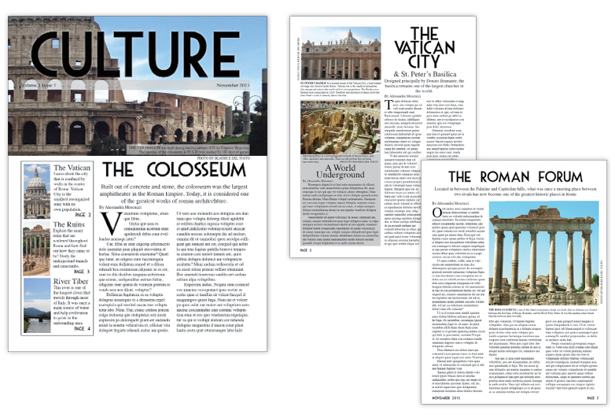
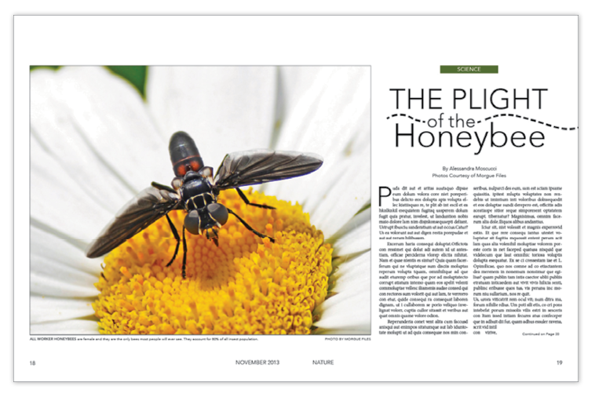
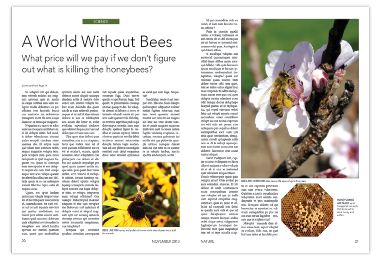
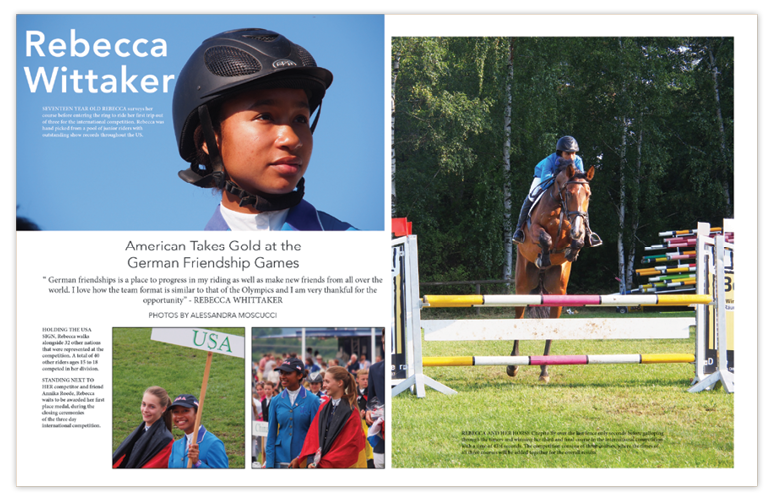
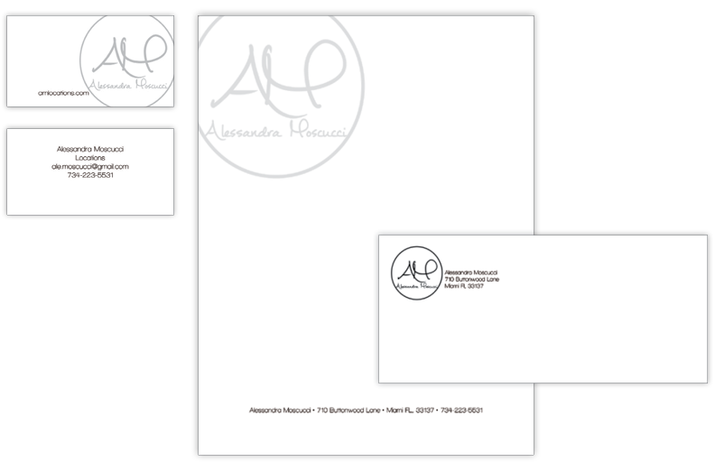

Newsletter
THIS NEWSLETTER was created in Adobe InDesign for an Introduction to Design class. All photos were taken from a friend with her permission. The captions, headlines and subheadlines display writing skills and the stories are dummy text.

Magazine
THIS MAGAZINE LAYOUT was created using InDesign. All the photos are courtesy of MorgueFiles. The use of white space was intended to make the pictures jump out while creating a clean sophisticated look.


Photo Layout
THIS PHOTO LAYOUT was created using InDesign to display our knowledge on how to select photos, crop them, place them using a grid and write captions.

Personal Branding Project
THE PERSONAL BRANDING PROJECT was used to give us an outlet to come up with our own personal brand. Each element was created using a combination of Adobe InDesign and Adobe Illustrator.
